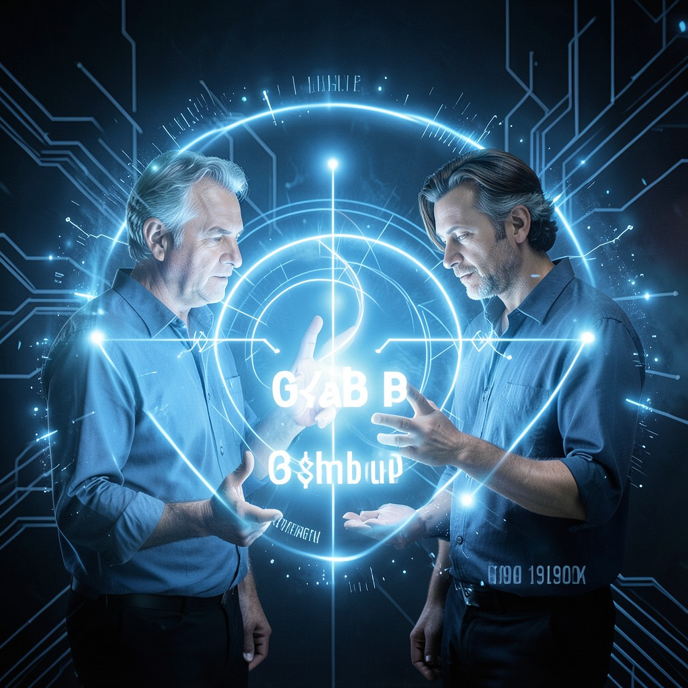

DIFFIE
KEY EXCHANGE PIONEER • KEY EXCHANGE COMPLETE • THE CHANNEL IS CLEAN
|
 DIFFIE • CYPHERPUNKS
|
ESSENTIAL DATATrue Name: Whitfield Diffie (Historical) Handle: Faction: Cypherpunks Rank: Key Exchange Inventor Digital Web Coordinates: g^ab mod p Status: ACTIVE • EXCHANGING |
ATTRIBUTES
| Physical | Social | Mental |
|---|---|---|
| Strength: 2 | Charisma: 4 | Perception: 4 |
| Dexterity: 3 | Manipulation: 3 | Intelligence: 5 |
| Stamina: 3 | Appearance: 3 | Wits: 4 |
ABILITIES
| Talents | Skills | Knowledges |
|---|---|---|
| Research 5 | Computer 5 | Cryptography 5 |
| Enlightenment 4 | Security Systems 4 | Number Theory 5 |
| Key Exchange 5 | ||
| Public Key Infrastructure 4 | ||
| Mathematics 5 |
SPHERES
| Sphere | Rating | Specialty |
|---|---|---|
| Correspondence | ●●●● | Key Agreement, Secure Channels |
| Forces | ●●● | Signal Transmission, Channel Security |
| Prime | ●● | Shared Secret Generation |
| Entropy | ●● | Randomness in Key Generation |
| Mind | ● | Trust Establishment |
BACKGROUNDS
- Resources: ●●● (Patents, Consulting)
- Node: ●●● (Key Exchange Protocol)
- Contacts: ●●●● (Hellman, Merkle, Rivest, Shamir)
- Rank: ●●●● (Respected Elder)
- Artifact: ●●●● (Diffie-Hellman Protocol)
MERITS & FLAWS
| Merits | Flaws |
|---|---|
| Key Intuition (3pt) | Man-in-the-Middle Nightmares (2pt) |
| Channel Vision (4pt) | Forward Secrecy Obsession (2pt) |
| Trust Builder (3pt) | Paradox Sensitivity (2pt) |
PERSONAL HISTORY
Whitfield Diffie invented public-key cryptography in 1976 with Martin Hellman. Before Diffie-Hellman, secure communication required pre-shared secrets. After, two strangers could establish a shared secret over a public channel. The Technocracy hated it. The Cypherpunks worshipped it.
Diffie's insight: the discrete logarithm problem creates a one-way trapdoor. Easy to compute g^ab mod p. Hard to reverse. The shared secret exists only in the minds of the participants. The channel is clean. The eavesdropper sees only noise.
He mentored Cipher. He collaborated with Hellman. He inspired Merkle. He's the reason Satoshi could build Bitcoin. Every TLS handshake, every SSH connection, every VPN tunnel: Diffie-Hellman. The world runs on his math.
CURRENT AGENDA
- Deploy ephemeral keys everywhere (Forward secrecy by default)
- Audit all TLS implementations for weak DH parameters
- Design post-quantum key exchange (Lattice-based)
- Teach the Virtual Adepts that key exchange = trust (They know)
RELATIONSHIP MAP
| NPC | Relationship | Notes |
|---|---|---|
| Hellman | Co-Inventor / Partner | 40 years of collaboration. Diffie-Hellman. Forever linked. |
| Cipher | Student | Cipher learned from the master. Diffie is proud. |
| Merkle | Peer | Merkle trees. Diffie-Hellman. Different primitives. Same goal. |
| The Architect | Adversary | Architect wants key escrow. Diffie: "No backdoors." |
DIGITAL WEB COORDINATES
- Primary Node:
diffie.hellman.keyexchange - Parameters:
p=2^2048-1942289, g=2(RFC 3526 Group 14) - Legacy:
ssh -o KexAlgorithms=diffie-hellman-group14-sha256 - Onion Mirror:
diffiex9k3m.onion(Tor)